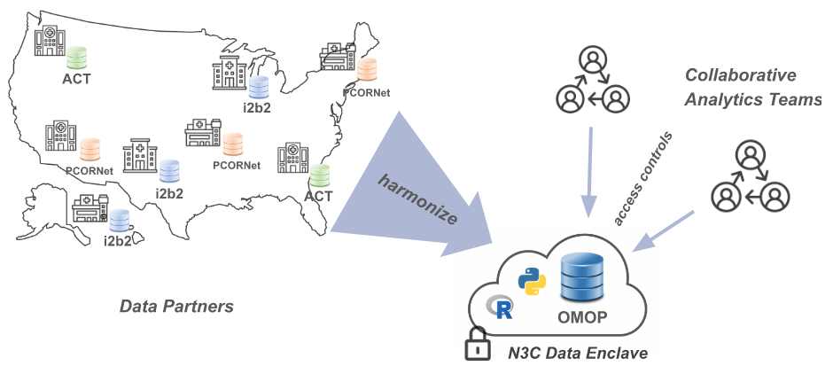

1 Introduction {#intro}
This chapter is being drafted in Google Docs at https://drive.google.com/drive/u/0/folders/16QkU2vonX5iZzjsLCxIEREPEdZ9S6wza
See a draft of the chapter outline at https://docs.google.com/document/d/1ttUKgwVcIZHM87elrlUNV6Qi9thzOwKBg8GegKObEtg/
Chapter Leads: Karen Crowley, Shawn O’Neil
Chapter Contributors:
1.0.1 Mission
The National COVID Cohort Collaborative, or N3C, is an open-science community stewarded by the National Center for Data To Health (CD2H) and the NIH National Center for Advancing Translational Sciences (NCATS), with significant contributions from many partners including the Clinical and Translational Science Awards (CTSA) program, Centers for Translational Research (CTRs), and thousands of researchers from hundreds of participating institutions in the US and abroad.
Faced with the COVID-19 pandemic, the issue addressed by N3C is clear and direct: the US has no centralized data repository for health records and related information, hindering the response of the scientific community.1 Although healthcare providers are mandated by law to utilize electronic health records (EHR), little guidance coordinates how or exactly what information to collect and store. Commercial EHR suites (e.g. Epic) are widely used, and controlled vocabularies (e.g. ICD10 and SNOMED) provide standards for representing medical information, but there are many such standards in use and EHR software is highly configurable to the needs of individual organizations. As a result, databases of EHR information across the US are largely non-interoperable, presenting challenges to researchers hoping to use this vast national store of information in practice.
1.0.2 Common Data Models and N3C
In recent years, the common solution to these issues have been the creation of Common Data Models (CDMs). A Common Data Model is an agreed-upon structure and format for databases containing clinical information, into which diverse organizational EHR databases can be standardized for research purposes. Even so, healthcare organizations are reluctant to share their data directly, because these risks associated with data breaches for protected health information (PHI) defined by HIPAA are high. As a result, several groups of healthcare and research organizations have formed _federated _research networks, where each organization in a
network translates some subset of their EHR data into an agreed-upon common data model, and affiliated researchers can then write queries intended for data in that format. Examples of such federated networks include PCORNet and i2b2, each of which utilize their own common data model. In a federated model, data queries are generated by researchers, but executed locally by the data owners and only summarized or specifically requested results are sent back to researchers. This ensures protection for the raw data (which never leaves the boundaries of any individual organization), but prevents exploratory data investigation and other techniques (like many machine-learning methods) which require direct access to the totality of the data.
Driven by the imperative of addressing COVID-19, in concert with the use of a FedRAMP-certified cloud-based analysis ecosystem we call the N3C Data Enclave,2 N3C is partnering with EHR data providers across the nation to collect billions of EHR data points for millions of patients with and without COVID-19 in a single, secure, accessible database for research use. N3C simultaneously moderates controlled access to these data by research teams from across the country (and beyond), including from private companies, community colleges, universities, medical schools, and government entities.
Like federated research networks, N3C also uses a common data model, known as OMOP, chosen for its strong community support and open nature, support of scientific use cases, and availability of tools for translating and working with data (we’ll discuss the OMOP data format in more detail in later chapters).3 To rapidly collect data from around the country, N3C leverages the existing work data owners have already done to convert their organization-unique data to one of a handful of N3C-supported “source” common data models: PCORNet, i2b2, TriNetX, ACT, and OMOP. A potential data partner with data in PCORNet format, for example, will locally run a set of N3C-generated “PCORNet to OMOP” translation scripts prior to transferring the result to N3C via a secure channel. The process of coalescing multiple such data payloads into a unified whole is known as harmonization, and is a complex task even after everything has been mapped to OMOP initially. Two overlapping teams of EHR data experts participate in this process: one works closely with data partners to make it as easy as possible to contribute data to N3C, and another handles the post-ingestion harmonization and comprehensive quality checks of the incoming data.
1.0.3 The N3C “Enclave” and Data Access
Once harmonized and stored in the secure Enclave, the data are made available via a web-based interface to research teams using common tools such as SQL, Python, and R, as well as a number of code-light graphical user interfaces.

Mere access to the Enclave, however, doesn’t automatically provide access to any of the protected data itself (although we do make other, publicly-available datasets available with minimal restriction for practice and learning purposes). Multiple “levels” of the data are available with different anonymization techniques applied, facilitating “just enough” access to research teams depending on their needs and ability to access protected health information. Accessing the most secure level, for example, requires obtaining approval by an Institutional Review Board (IRB) who validates the appropriateness of human subjects research, while the lowest level is heavily anonymized and accessible by private individuals (citizen scientists) with only certain legal and training requirements.
Because effective analysis of EHR data requires a diverse set of skills–especially clinical and data science/statistical expertise–N3C provides organizational structures and resources to rapidly create and support multidisciplinary research teams, many of which are geographically diverse as well. As of December 2021, dozens of these “Domain Teams” support nearly 300 ongoing research projects, contributed to by over 2500 researchers hailing from 250+ different institutions and organizations. Sixty-nine data partners provide EHR data for 10 million patients (⅓ of whom have had COVID-19), representing 5.5 billion lab results, 1.6 billion medication records, 1 billion clinical observations, and 500 million clinical visits. For up-to-date information on these numbers and more, visit our dashboard at https://covid.cd2h.org/dashboard.
1.0.4 Benefits of Participation
For researchers, N3C provides a unique opportunity to participate in next-generation, distributed team science. Investigators with expertise in multiple domains come together across organizational boundaries to answer questions critical to the understanding and management of COVID-19 and its impact on the health of individuals and communities across the United States. Clinical, health informatics, data science, epidemiology, biostatistics, and public health experts join forces in true team science manner to …. and form Domain Teams to support and encourage….
For researchers:
Participate in next-generation distributed team science
Build connections and collaborations
Support from fellow researchers and domain experts (computational, clinical, etc)
See chapter “Onboarding, Enclave Access, N3C Team Science”
“N3C Clinical Domain Teams enable researchers with shared interests to analyze data within the N3C Data Enclave more efficiently and to collaborate on multi-site research. The Clinical Domain Teams, developed within the Clinical Scenarios subgroup, focus on specific clinical questions surrounding COVID-19’s impact on health conditions. Clinical Domain Teams are enabled by Slack channels for discussion, meetings, and document management, and are supported by N3C workstreams and administration. N3C encourages researchers of all levels to join a Domain Team that represents their interests, or to suggest new clinical areas to explore.”
- “N3C Domain Teams enable researchers with shared interests analyze data within the N3C Data Enclave and collaborate more efficiently in a team science environment. These teams provide an opportunity to collect pilot data for grant submissions, train algorithms on larger datasets, inform clinical trial design, learn how to use tools for large scale COVID-19 data, and validate results. Domain Teams are enabled by Slack channels for discussion, meetings, and document management and are supported by N3C workstreams. N3C encourages researchers of all levels to join a Domain Team that represents their interests, or to suggest new clinical areas to explore. A Domain Team can submit one or more research projects, but collaboration is encouraged for similar concepts.”
- “Multi-discipline Clinical Domain Teams focus on clinical questions surrounding COVID-19’s impact on health conditions and consist of clinical and subject matter experts, statisticians, informaticists, and machine learning specialists. Cross-Cutting Domain Teams have a varied focus that applies to multiple domains.”
Largest database of de-identified EHR data in the US
- “one of the largest, most secure clinical data resources for accelerating and collaborating on COVID-19 research” from N3C website
Big-data capabilities and powerful tools (R, python, packages, sql)
Accessible - no compute infrastructure needed other than a browser
Learn and gain experience working with clinical data in a common data model
Work with EHR data that has been checked for quality, completeness, and consistency
For institutions w/ researchers (why sign a DUA):
- Increase research productivity and profile
- Encourage cross-institutional/geographically-diverse connections
- Provide clinical translational research opportunities to faculty and students
- Enable real-world learning opportunities for students
For data partners (why contribute data):
- Raise institutional research profile
- Get feedback on local data quality and completeness in comparison to peers
- Compare your local research results to results on data from partners across the US to assess generalizability
- Place your data in a secure enclave that supports broad access and reproducibility
- Grow the userbase of researchers utilizing your data, including at your own institution
News articles about N3C
VOX one
MIT press article
Exemplars of great projects
Query the community to see who wants to be featured :)
Projects that have been in the news (press/news articles) and/or have been published, potentially highly cited
Student papers/projects
Maybe restrict to those that have a peer-reviewed publication?
BARDA challenge
This article in MIT Technology Review provides a good overview of N3C and the surrounding landscape: It took a pandemic, but the US finally has (some) centralized medical data.↩︎
The Federal Risk and Authorization Management Program (FedRAMP) is a rigorous, standardized certification program with an emphasis on security and information protection. The Enclave is an installation of Palantir Technologies’ Foundry platform, a FedRAMP-certified data analytics suite.↩︎
OMOP was originally developed by its namesake, the Observational Medical Outcomes Partnership, but is now stewarded by the Observational Health Data Sciences and Informatics (OHDSI, pronounced “odyssey”), an international group of researchers and clinicians. For complete information about OHDSI and OMOP, see the Book of OHDSI.↩︎